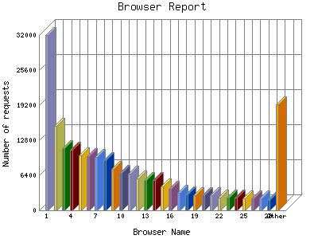

Analog 5.24
Analog 5.24 Report Magic for Analog 2.13
Report Magic for Analog 2.13The Browser Report provides a detailed breakdown of the most popular web
browsers used to visit this site. From this report it is also possible to
identify which operating system and which version of the browser the visitor
is using. For example:
Netscape Communicator 4.5, US English version
running on Windows 95 would look like:
Mozilla/4.5 [en]
(Win95; U)
MSIE 4.01 running on Windows 98 would look like:
Mozilla/4.0 (compatible; MSIE 4.01; Windows 98).
This report shows the first 40 results by number of requests. This report is sorted by number of requests.

| Browser Name | Number of requests | Percentage of the bytes | |
|---|---|---|---|
| 1. | Mozilla/5.0 (compatible; bingbot/2.0; http://www.bing.com/bingbot.htm) | 31,953 | 6.10% |
| 2. | Mozilla/5.0 (compatible; Googlebot/2.1; http://www.google.com/bot.html) | 15,446 | 2.17% |
| 3. | Mozilla/5.0 (compatible; Baiduspider/2.0; http://www.baidu.com/search/spider.html) | 11,398 | 0.80% |
| 4. | Mozilla/5.0 (compatible; AhrefsBot/5.0; http://ahrefs.com/robot/) | 11,023 | 1.46% |
| 5. | Java/1.6.0_04 | 10,109 | 0.84% |
| 6. | Mozilla/5.0 (compatible; MJ12bot/v1.4.5; http://www.majestic12.co.uk/bot.php? ) | 9,828 | 1.90% |
| 7. | Mozilla/5.0 (compatible; YandexBot/3.0; http://yandex.com/bots) | 9,740 | 1.1% |
| 8. | Mozilla/5.0 (compatible; Yahoo! Slurp; http://help.yahoo.com/help/us/ysearch/slurp) | 9,218 | 1.31% |
| 9. | Mozilla/5.0 (compatible; DotBot/1.1; http://www.opensiteexplorer.org/dotbot, help@moz.com) | 7,627 | 0.66% |
| 10. | Mozilla/5.0 (compatible; Ezooms/1.0; ezooms.bot@gmail.com) | 6,786 | 0.56% |
| 11. | Mozilla/5.0 (compatible; Dow Jones Searchbot) | 6,719 | 0.53% |
| 12. | Mozilla/5.0 (compatible; MSIE 9.0; Windows NT 6.1; WOW64; Trident/5.0) | 5,811 | 2.21% |
| 13. | Mozilla/5.0 (Windows NT 6.1; WOW64; Trident/7.0; rv:11.0) like Gecko | 5,528 | 1.83% |
| 14. | Mozilla/5.0 (compatible; 008/0.83; http://www.80legs.com/webcrawler.html) Gecko/2008032620 | 5,516 | 0.49% |
| 15. | Mozilla/5.0 (compatible; YandexImages/3.0; http://yandex.com/bots) | 4,397 | 0.50% |
| 16. | Mozilla/5.0 (compatible; SiteExplorer/1.0b; http://siteexplorer.info/) | 3,981 | 0.32% |
| 17. | Mozilla/5.0 (compatible; MJ12bot/v1.4.3; http://www.majestic12.co.uk/bot.php? ) | 3,141 | 0.26% |
| 18. | Mozilla/5.0 (compatible; SISTRIX Crawler; http://crawler.sistrix.net/) | 2,847 | 0.23% |
| 19. | Mozilla/4.0 (compatible; MSIE 6.0; Windows NT 5.1; SV1) | 2,835 | 0.18% |
| 20. | msnbot-media/1.1 ( http://search.msn.com/msnbot.htm) | 2,726 | 2.42% |
| 21. | Googlebot-Image/1.0 | 2,718 | 0.58% |
| 22. | Mozilla/5.0 (compatible; MSIE 9.0; Windows NT 6.1; Trident/5.0) | 2,393 | 0.90% |
| 23. | Mozilla/5.0 (compatible; AhrefsBot/4.0; http://ahrefs.com/robot/) | 2,316 | 0.20% |
| 24. | Wotbox/2.01 ( http://www.wotbox.com/bot/) | 2,257 | 0.19% |
| 25. | Mozilla/5.0 (X11; U; Linux; en-US) AppleWebKit/532.4 (KHTML, like Gecko) Qt/4.6.3 Safari/532.4 | 2,210 | 0.93% |
| 26. | Mozilla/5.0 (Windows NT 6.1; WOW64) AppleWebKit/537.36 (KHTML, like Gecko) Chrome/36.0.1985.143 Safari/537.36 | 2,120 | 0.56% |
| 27. | Mozilla/5.0 (compatible; EasouSpider; http://www.easou.com/search/spider.html) | 2,112 | 0.18% |
| 28. | Mozilla/5.0 (compatible; ScoutJet; http://www.scoutjet.com/) | 1,947 | 0.17% |
| 29. | Mozilla/4.0 (compatible; MSIE 6.0; Windows NT 5.2; .NET CLR 1.1.4322) | 1,904 | 0.16% |
| 30. | Mozilla/5.0 (compatible; MSIE 9.0; Windows NT 6.1; Trident/5.0); 360Spider(compatible; HaosouSpider; http://www.haosou.com/help/help_3_2.html) | 1,890 | 0.59% |
| 31. | Sosospider ( http://help.soso.com/webspider.htm) | 1,828 | 0.8% |
| 32. | Mozilla/5.0 (compatible; BLEXBot/1.0; http://webmeup-crawler.com/) | 1,801 | 0.14% |
| 33. | Java/1.4.1_04 | 1,719 | 0.14% |
| 34. | Mozilla/5.0 (Windows NT 6.1) AppleWebKit/537.1 (KHTML, like Gecko) Chrome/21.0.1180.89 Safari/537.1; 360Spider(compatible; HaosouSpider; http://www.haosou.com/help/help_3_2.html) | 1,693 | 0.50% |
| 35. | Mozilla/5.0 (Windows NT 6.1; WOW64) AppleWebKit/534 (KHTML, like Gecko) BingPreview/1.0b | 1,657 | 0.63% |
| 36. | Mozilla/5.0 (compatible; spbot/4.4.2; http://OpenLinkProfiler.org/bot ) | 1,467 | 0.12% |
| 37. | facebookexternalhit/1.1 ( http://www.facebook.com/externalhit_uatext.php) | 1,420 | 0.70% |
| 38. | Mozilla/4.0 (compatible; MSIE 6.0; Windows NT 5.1; MyIE2; Deepnet Explorer) | 1,325 | 0% |
| 39. | SAMSUNG-SGH-E250/1.0 Profile/MIDP-2.0 Configuration/CLDC-1.1 UP.Browser/6.2.3.3.c.1.101 (GUI) MMP/2.0 (compatible; Googlebot-Mobile/2.1; http://www.google.com/bot.html) | 1,323 | 0.10% |
| 40. | Mozilla/5.0 (compatible; MegaIndex.ru/2.0; http://megaindex.com/crawler) | 1,305 | 0.10% |
| [not listed: 8688] | 245,660 | 67.22% | |
This report was generated on April 3, 2016 02:21.
Report time frame August 14, 2011 05:21 to April 3, 2016 04:37.
| Web statistics report produced by: | |
| Analog 5.24 | Report Magic for Analog 2.13 |